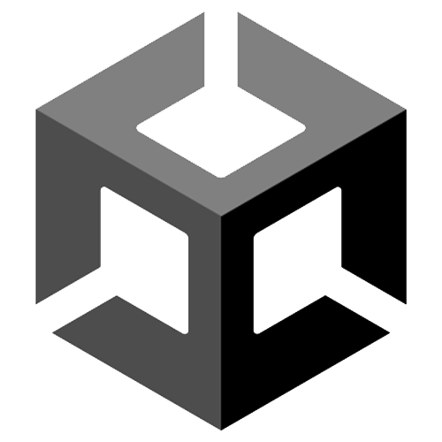
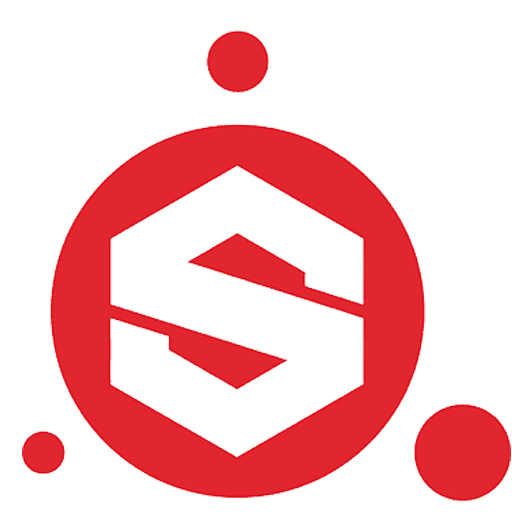
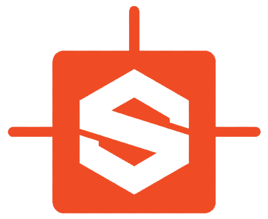

Simon van Strijp
Ik ben een jonge profecional die sinds 2017 in de creative design wereld werkt. Mijn passies liggen bij mensen, technologie en verhalen. Deze passies probeer ik te vertalen in ontwerpen waarbij ik de wereld beter wil achterlaten dan hoe ik die gevonden heb.
Profecionele ervaring
Academieraad Cmd-viscom
Lid, voorzitter 2022-hedenEmber Glitch
Co-founder, 3D Artist en stagebegeleider 2017-hedenStage - Sticky Studios
Game Artist Q 3&4 2016Stage - Team Reptile
Game Artist Q 1&2 2016Museum Dorestad
Kassa dienst, klusjes en tentoonstellingen opzetten De zomers van 2010 t/m 2014Skills
Empathie
Leiderschap
Assertief
Machine thinking
Coding:
HTML, CSS, Javascript, Java
3D Art
Animatie
Assertief
Machine thinking
Coding:
HTML, CSS, Javascript, Java
3D Art
Animatie
Machine thinking
Coding:
HTML, CSS, Javascript, Java3D Art
Animatie
Animatie
Software

Unity 3D
Visual Studio Code

Substance Painter

Substance Designer